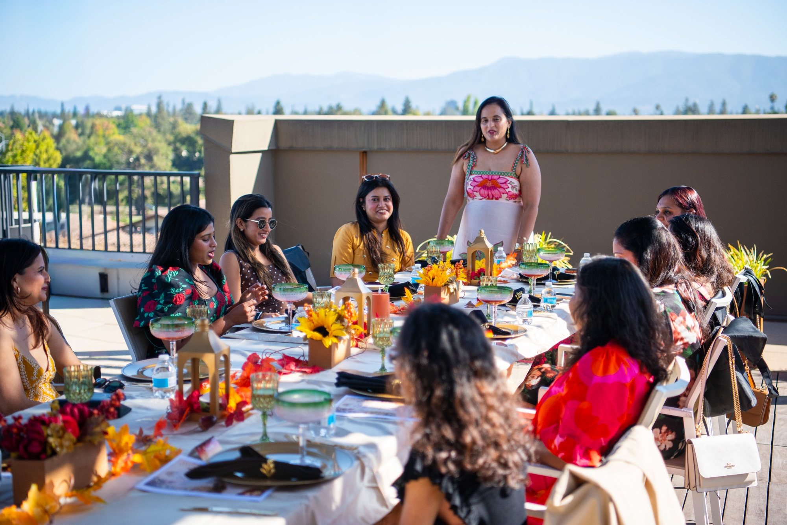
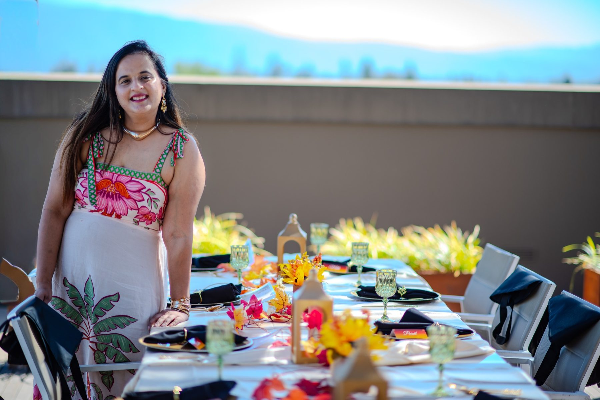

Supper Club Tables
Curated multi-course dinners built around regional Indian food and storytelling.
23rd Parallel is an intimate, story-led supper club where regional Indian flavors, beautiful tables and strangers becoming friends meet in one memorable evening.
Every 23rd Parallel experience begins with a story — a region, a memory, a journey. The food is the conversation starter. The table, the people and the details turn it into something you remember.
Curated multi-course dinners built around regional Indian food and storytelling.
Come solo or with a friend. The shared table is intentionally designed for conversation.
Food paired with workshops, artists and makers for an experience beyond the plate.
A dinner where the table becomes part of the story. Expect a theatrical evening of food, clues, conversation and a little intrigue.
Limited seating. Full event details and ticket availability are shown on the booking page.
I grew up in Korba, Chhattisgarh — a small city in the coal belt where the market smelled of raw turmeric and mahua flowers, and food was never written down because everyone already knew. Then came Surat, Gujarat, where I was raised on undhiyu and the particular sweetness Gujaratis fold into everything. My roots, though, are in Bhopal — my parents' city, the one I return to, the one that made me.
I studied and worked in Maharashtra before the road brought me to California. Trained as a software engineer, I spent years building systems — but the thing I kept returning to was the food nobody here had tasted.
Central India's flavors are among the most layered in the subcontinent, and almost entirely unknown to the world. That felt like something worth fixing.
23rd Parallel is my answer. A Californian table set with forgotten recipes of the heartland — reinterpreted with local produce and the eye of someone who has lived at both ends of the world.
Not fusion. Not nostalgia. Something new, grown from something very old.
A changing gallery of dishes from our tables. Replace any image in the images folder to keep the gallery current.
Planning a birthday, intimate celebration, team dinner, creative workshop or brand collaboration? We can shape a story-led food experience around your group instead of handing you a standard catering menu.
Tell us the occasion, group size and what you want your guests to feel. We’ll start from there.
Trade the standard team dinner for a thoughtfully hosted experience built around food, conversation and creativity. 23rd Parallel creates intimate gatherings for teams, client groups, celebrations and communities across the Bay Area.
Choose a hosted supper, pair the table with a hands-on creative workshop, or build a festive cultural experience around your team or celebration. Each gathering is shaped around the occasion rather than pulled from a generic catering package.
Story-led multi-course dining for team offsites, leadership dinners, client hosting and smaller company celebrations.
Pair a shared meal with artists and makers — candle making, regional art and other collaborative experiences.
Diwali, holiday gatherings and themed experiences that bring food, storytelling and a sense of occasion together.
Intimate celebrations with a curated menu and table experience that feels personal rather than banquet-style.
Warm, conversation-forward gatherings designed for communities that want to connect over something more memorable than a restaurant reservation.
Custom food-led activations and creative collaborations for makers, artists and brands looking for an intimate experiential format.
Share your preferred date, approximate guest count, location and what you are celebrating or trying to create.
We propose a food experience and, where relevant, a creative collaboration tailored to the group.
We host an intentional experience built for conversation, connection and a memorable sense of place.
Tell us a little about it. We can discuss the right format before you commit to anything.
Helpful details: occasion or company, preferred date, approximate guest count, preferred location, and whether you are interested in dining only or food + a creative experience.
Tell us about your eventA 23rd Parallel table is meant to feel warm, curious and communal — the kind of afternoon or evening where guests linger after the last course.


Reserve an upcoming supper club table, or get in touch to create a private experience for your own group.